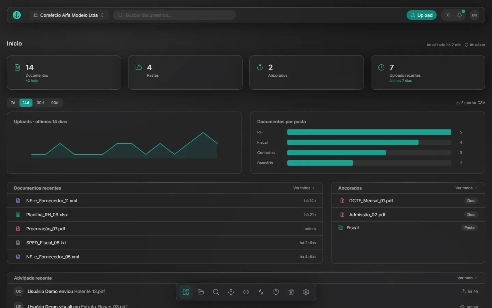
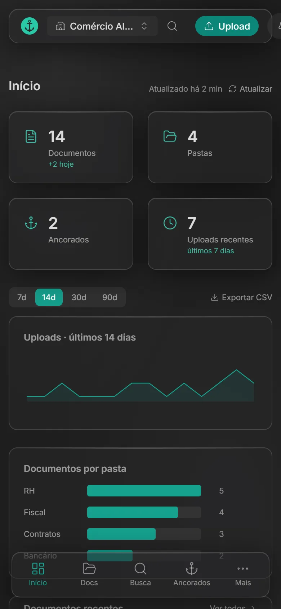
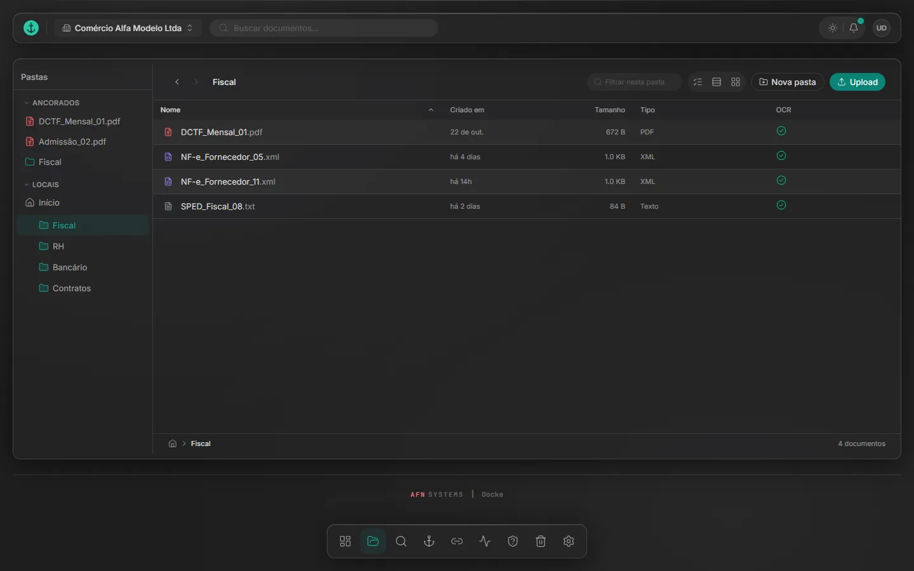
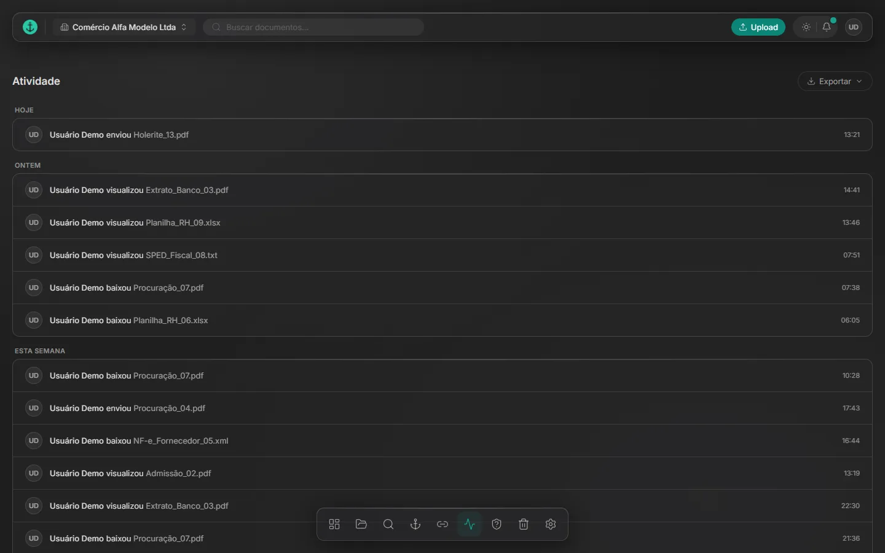

Docke
Documentos de várias empresas, com trilha de auditoria.


Por que existe
O grupo ia migrar toda a documentação para a nuvem. Desenvolvi o Docke atendendo aos pontos-chave dessa migração e moldado para a rotina das equipes.
Problema, sistema e prova
Problema
Documentos de várias empresas para organizar na nuvem, com prazos e retenção legal.
Sistema
Gestão eletrônica de documentos para várias empresas: busca no texto digitalizado (OCR), prazos de obrigações, retenção legal e trilha de auditoria encadeada por hash.
Prova
89 testes
83 de backend e 6 de ponta a ponta, no GitHub Actions. Conferidos em 9/11/2026.
Por dentro
-
Painel da empresa
Documentos, pastas, ancorados e envios recentes da empresa escolhida, com os documentos por pasta.
-

Pastas com OCR
Cada pasta lista os documentos com tipo, tamanho e a marca do OCR, que permite buscar dentro do texto digitalizado.
-

Trilha de auditoria
Cada envio, visualização e download fica registrado, numa trilha encadeada por hash.
-
Barra de navegação
Início, documentos, busca e ancorados ficam no pé da tela, como num app de celular, com o botão de envio no topo.
Stack
React 19, TypeScript, Vite, Tailwind CSS, FastAPI, PostgreSQL (RLS), Supabase, Tesseract, pytest, Playwright